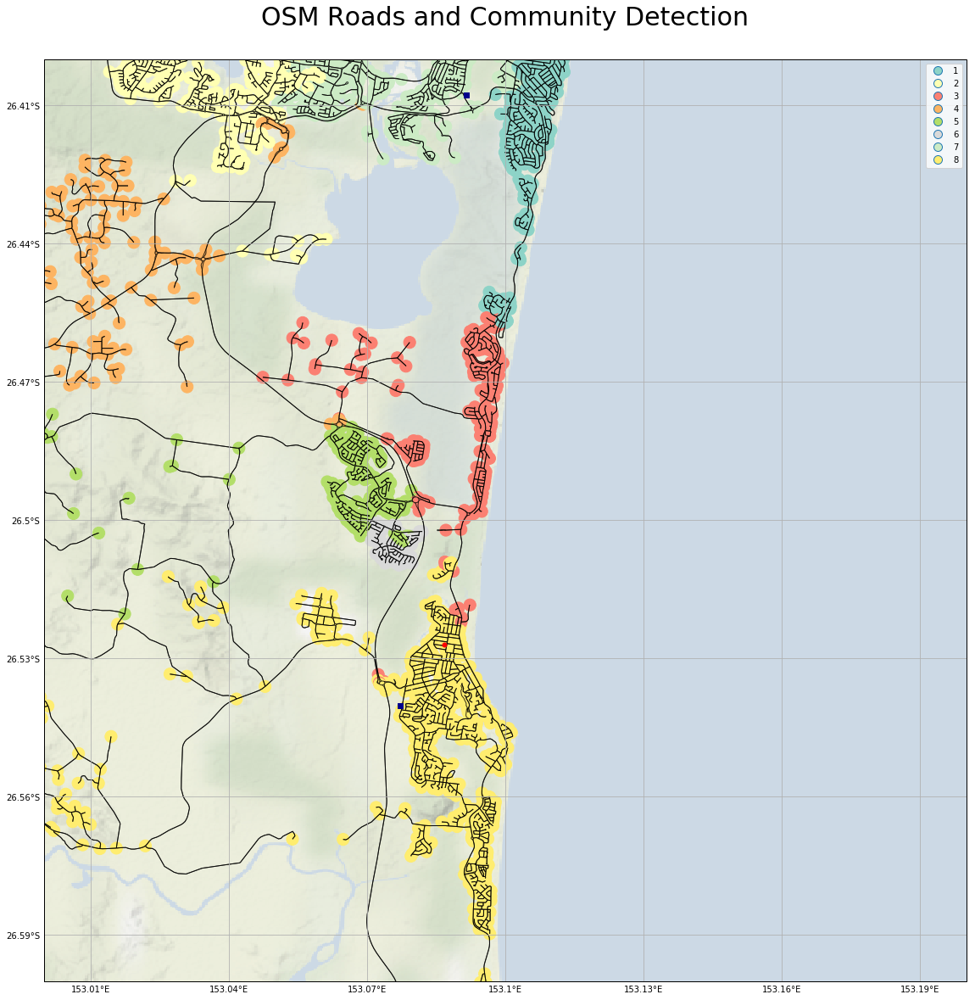

Visualization of communities via the Road Network
Introduction
Having extracted the local road network from Open Street Maps (via OSMNX - see earlier blog posts), I thought it might be interesting to checkout what properties of the road network we could automatically extract. One such property is that of 'community'.
Data Sources
To provide continuity with the previous maps, I included the local police stations.
The source of the police station locations is https://data.qld.gov.au/dataset/qps-police-stations
Mapping Design
Because I wanted to underlay some geographic context to the visualization of the road network, I decided to go with Cartopy as the basic mapping software, as its support for inclusion of map tiles is excellent.
In order to provide some context, I decided to use Cartopy to underlay the Stamen image tiles, showing just terrain. The URL is http://tile.stamen.com/terrain-background
This also proves a nice (and accurate) coastline, without which the map would be a little confusing.
As before, I chose OSMNX for road information, as it is unsurpassed in this area.
Implementation
Background Map Tiles
The Stamen terrain-only background map tiles are not supported out-of-box by Cartopy, but it is pretty easy to get access to them.
The following code fragment gets us an imagery map tile provider that we can pass to Cartopy.
class StamenToner(GoogleTiles):
def _image_url(self, tile):
x, y, z = tile
url = 'http://tile.stamen.com/terrain-background/{}/{}/{}.png'.format(z, x, y)
return url
# end _image_url
# end StamenToner
imagery = StamenToner()
Defining the map
First we create a figure holding a map, that uses the PlateCarree coordinate refrence system (CRS). Next, we set the extent of our map (to be just my local area).
fig = plt.figure(figsize=(20, 20) )
ax = fig.add_subplot(1, 1, 1, projection=ccrs.PlateCarree() )
home = ( 153, 153.2, -26.6, -26.4) #home = ( 152.5, 153.5, -27, -26)
ax.set_extent(home, crs=ccrs.PlateCarree() )
Loading the road network
Next we load the road network, and convert the nodes (intersections) and edges (road segments) of our graph into GeoPandas GeoDataFrames.
graph = ox.graph_from_bbox(home[3], home[2], home[1], home[0], network_type='drive', truncate_by_edge=True)
n_df, e_df = ox.save_load.graph_to_gdfs(graph, nodes=True, edges=True)
Plotting the roads
Next we add the background image, and plot the road network. We set zorder to 2, so that all the roads are visible, even when we add out community shading.
ax.add_image(imagery, 12, alpha=0.5)
e_df.plot(ax=ax, edgecolor='black', linewidth=1, facecolor='none', zorder=2, alpha=0.8, )
Extract the communities
Next, we add an attribute community to our GeoDataFrame that represents nodes, and set it to 0 for all nodes.
Then we use an algorithm provided by networkx. I tried most of the networkx community algorithms: some took to long to complete, some failed on the types of network (graphs) returned by OSMNX, but async_fluidc:
-
gave results that accorded with my intuition
-
was reasonably snappy
Note that the networks returned via OSMNX must be converted to undirected network before processing. I chose to extract 8 communities; this was an arbitary guess, but as it turns out, not a bad one given the size of the area in my map.
The async_fluidc call returns sets of nodes; each node in the set belong to the same community. We loop over these sets, and assign an integer to each node, being the community index (starting at 1 for non-programmer friendlyness)
n_df['community'] = 0
zz = community.asyn_fluidc(graph.to_undirected(), 8 )
for i, x in enumerate(zz):
for n in x:
n_df.at[n, 'community'] = i+1
#end for
#end for
Plotting the communities
We show the communities by usng GeoPandas to draw the nodes, with a marker colored according to the community. I decided to use the Set3 colormap.
n_df.plot(ax=ax, marker='o', markersize=200, column='community', cmap='Set3', zorder=1, legend=True, categorical=True)
map embellishments
I add a marker for my home.
# plot marker with lon / lat
home_lat, home_lon = -26.527,153.08679
ax.plot(home_lon, home_lat, marker='o', transform=ccrs.PlateCarree(), markersize=5, alpha=1, color='red', zorder=5 )
I add markers for local police stations.
station_file='D:\\Cartography\\QPS_STATIONS.shp'
police_df = gpd.read_file(station_file)
police_df.plot(ax=ax, marker='s', color='darkblue', zorder=5, legend=True)
I add a grid.
gl = ax.gridlines(draw_labels=True)
gl.xlabels_top = gl.ylabels_right = False
gl.xformatter = LONGITUDE_FORMATTER
gl.yformatter = LATITUDE_FORMATTER
I add a title, and show the result.
plt.title('OSM Roads and Community Detection', {'fontsize':30}, pad=40)
plt.show()
Resulting graphic

A larger version is here
{kind=link}
This accords pretty well with my perception of the local communities. The number of communities I chose to extract (8) is maybe a little large, as community 6 (light grey) is probably not real. The differences between the coastal communities (1 - teal, 2 - pink, 8 - dark yellow), and the hinterland community (4 - orange) are very real in real life.
Conclusion
For completeness, here are the imports for this Jupyter Notebook (not all are used in the code fragments above, as some are for producing output to support reproducability).
import osmnx as ox
import networkx as nx
from networkx.algorithms import community
import geopandas as gpd
import pandas as pd
import numpy as np
import matplotlib.pyplot as plt
import matplotlib.patches as mpatches
import matplotlib.colors as mpc
import matplotlib.cm as mcm
import cartopy.crs as ccrs
from cartopy.mpl.gridliner import LONGITUDE_FORMATTER, LATITUDE_FORMATTER
from cartopy.io.img_tiles import GoogleTiles
from shapely.geometry import Polygon
from shapely.geometry import LineString
import itertools